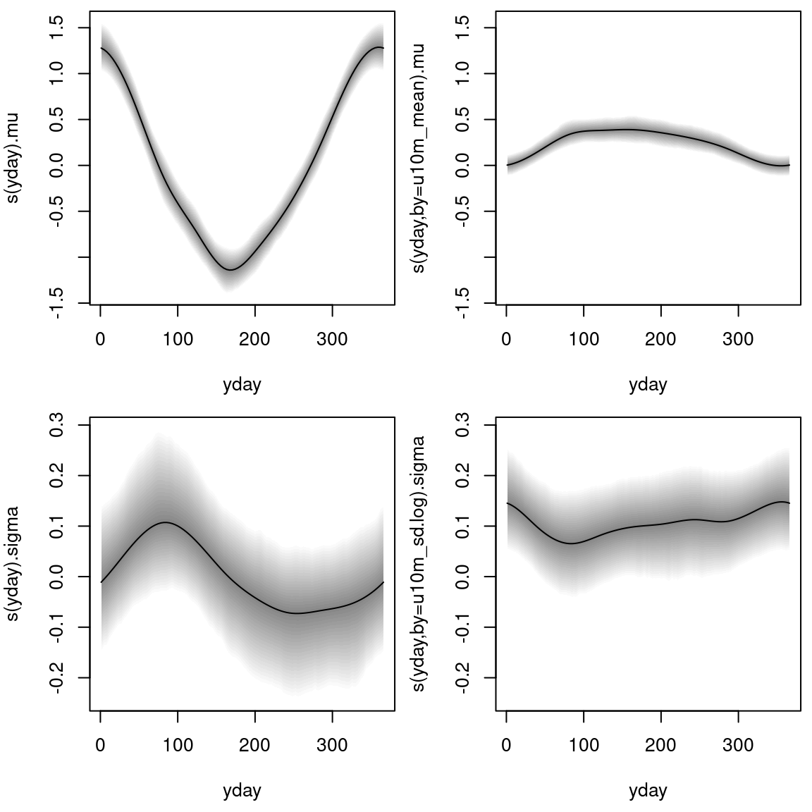
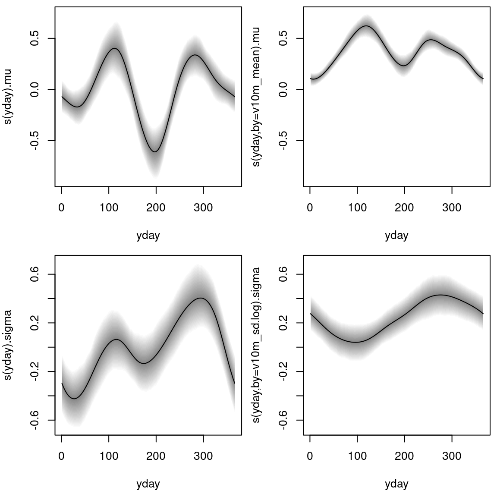

bivnorm.RmdThe article Bivariate Gaussian models for wind vectors in a distributional regression framework (Lang et al. 2019) presents a new probabilistic post-processing method for wind vectors employing the bivariate Gaussian distribution (Klein et al. 2014). In contrast to previous studies all parameters of the bivariate Gaussian distribution can be modeled simultaneously, namely the location and scale parameters for both wind components and also the correlation parameter between them employing flexible regression splines. The performance of the new method is tested in Lang et al. (2019) for stations located in plains, mountain foreland, and within an alpine valley employing European Centre for Medium-Range Weather Forecasts (ECMWF) ensemble forecasts as explanatory variables for all distribution parameters.
This vignette provides example code how to set up the models employing the package bamlss as presented in the article.
The example code for the bivariate Gaussian models introduced in Lang et al. (2019) is illustrated based on the freely available EPS reforecasts of the NOAA’s second-generation global ensemble reforecast dataset (Hamill et al. 2013) for the 12 hour forecast step bilinearly interpolated to the site of interest. As observational data wind measurement at the Department of Atmospheric and Cryospheric Sciences of the University of Innsbruck are used in this analysis (CC BY-SA 4.0). In addition, wind measurements for Hamburg given by the Deutscher Wetterdienst (DWD) and the corresponding ensemble forecasts are also provided but not analyzed in this vignette. At both sites, wind speed and direction measurements are reported for the 10m height level. The data are 10-minute averages and contain the period from January 1, 2015 to December 31, 2018.
The data for Innsbruck and Hamburg is provided here and can be loaded into R with
In a first step, we combine two univariate heteroscedastic regression models that post-process each wind component separately with correlation fixed at zero. Hence, for the location and scale part, it uses its direct counterparts of the EPS as covariates, namely EPS-forecasted zonal wind information (\(\text{vec}_1\)) to model the zonal component of the bivariate response, and EPS-forecasted meridional wind information (\(\text{vec}_2\)) to model the meridional component:
\[\begin{align} \begin{split} \mu_{\star} &= \underbrace{{\alpha_\star}_{0} + {f_\star}_{0}(\text{doy})}_\text{intercept} + \underbrace{({\alpha_\star}_{1} + {f_\star}_{1}(\text{doy}))}_\text{slope coefficient} \cdot \text{vec}_{\star, mean},\\[1ex] \text{log}(\sigma_{\star}) &= \underbrace{{\beta_\star}_{0} + {g_\star}_{0}(\text{doy})}_\text{intercept} + \underbrace{({\beta_\star}_{1} + {g_\star}_{1}(\text{doy}))}_\text{slope coefficient} \cdot \text{vec}_{\star, log.sd},\label{eq:gam:locsc:v1} \end{split} \end{align}\]
where, \(\alpha_\bullet\) and \(\beta_\bullet\) are regression coefficients, and \(f_\bullet(\text{doy})\) and \(g_\bullet(\text{doy})\) employ cyclic regression splines conditional on the day of the year (doy). The subscripts \(mean\) and \(log.sd\) refer to mean and log standard deviation of the ensemble wind components, respectively. The equation specifies a time-adaptive training scheme, where the linear predictors consist of a global intercept and slope coefficient plus a seasonally varying deviation. Thus, the intercept and slope coefficients can smoothly evolve over the year in case that the bias or the covariate’s skill varies seasonally.
The formulas, model fitting, and prediction are performed according to:
## Formulas
f_blm.u.0 <- list(
u10m_obs ~ s(yday, bs = 'cc') + s(yday, bs = 'cc', by = u10m_mean),
sigma ~ s(yday, bs = 'cc') + s(yday, bs = 'cc', by = u10m_sd.log)
)
f_blm.v.0 <- list(
v10m_obs ~ s(yday, bs = 'cc') + s(yday, bs = 'cc', by = v10m_mean),
sigma ~ s(yday, bs = 'cc') + s(yday, bs = 'cc', by = v10m_sd.log )
)
## Model fitting
m_blm.u.0 <- bamlss(f_blm.u.0, family = bamlss:::gaussian_bamlss, data = dat,
burnin = 2000, thin = 10, n.iter = 12000, sampler = TRUE, nu = 1)
m_blm.v.0 <- bamlss(f_blm.v.0, family = bamlss:::gaussian_bamlss, data = dat,
burnin = 2000, thin = 10, n.iter = 12000, sampler = TRUE, nu = 1)
## Prediction
p_blm.0 <- list(
"mu1" = predict(m_blm.u.0, type = "parameter")$mu,
"mu2" = predict(m_blm.v.0, type = "parameter")$mu,
"sigma1" = predict(m_blm.u.0, type = "parameter")$sigma,
"sigma2" = predict(m_blm.v.0, type = "parameter")$sigma,
"rho" = rep(0, unique(sapply(predict(m_blm.v.0, type = "parameter"), length)))
)The estimated cyclic seasonal effects are visualized for the first wind component (\(\text{vec}_1\)) with
plot(m_blm.u.0, pages = 1)
For the second wind component (\(\text{vec}_2\)) the effects are illustrated accordingly:

The estimated effects are on the scale of the additive predictor; i.e., on the linear scale for the location parameters \(\mu_\star\) and on the log-scale for the scale parameters \(\sigma_\star\). Each of the four distribution parameters is described by a (potentially) seasonally varying effect for the intercept and the slope coefficient.
In a second step, we extend the setup by employing the zonal and meridional wind information of the ensemble for the linear predictors of all location and scale parameters. That means we use the ensemble information of both the zonal and meridional wind components for the two components of the response. We propose to employ seasonally varying effects depending on the ensemble wind direction, which allows the model to rotate the forecasted wind direction if necessary. To do so, we obtain a two-dimensional smooth function represented by a tensor product spline with a respective cyclic constraint for the day of the year (doy) and for the mean ensemble wind direction (\(\text{dir}_{mean}\)):
\[\begin{equation} \begin{split} \mu_{\star} = {\alpha_\star}_{0} + {f_\star}_{0}(\text{doy}) &+ ({\alpha_\star}_{1} + {f_\star}_{1}(\text{doy}) \cdot {f_\star}_{2}(\text{dir}_{mean})) \cdot \text{vec}_{1, mean}\\ &+ ({\alpha_\star}_{2} + {f_\star}_{3}(\text{doy}) \cdot {f_\star}_{4}(\text{dir}_{mean})) \cdot \text{vec}_{2, mean},\\[1ex] \text{log}(\sigma_{\star}) = {\beta_\star}_{0} + {g_\star}_{0}(\text{doy}) &+ ({\beta_\star}_{1} + {g_\star}_{1}(\text{doy}) \cdot {g_\star}_{2}(\text{dir}_{mean})) \cdot \text{vec}_{1, log.sd}\\ &+ ({\beta_\star}_{2} + {g_\star}_{3}(\text{doy}) \cdot {g_\star}_{4}(\text{dir}_{mean})) \cdot \text{vec}_{2, log.sd}, \label{eq:gam:locsc:v2} \end{split} \end{equation}\]
where, as before, \(\alpha_\bullet\) and \(\beta_\bullet\) are regression coefficients, and \(f_\bullet\) and \(g_\bullet\) employ cyclic regression splines.
The model formulas are specified by
## Formulas
f_ram.u.0 <- list(
u10m_obs ~ s(yday, bs = 'cc') + te(yday, dd10m_mean, k = c(5, 5), bs = c('cc','cc'), by = u10m_mean) +
te(yday, dd10m_mean, k = c(5, 5), bs = c('cc','cc'), by = v10m_mean),
sigma ~ s(yday, bs = 'cc') + te(yday, dd10m_mean, k = c(5, 5), bs = c('cc','cc'), by = u10m_sd.log) +
te(yday, dd10m_mean, k = c(5, 5), bs = c('cc','cc'), by = v10m_sd.log)
)
f_ram.v.0 <- list(
v10m_obs ~ s(yday, bs = 'cc') + te(yday, dd10m_mean, k = c(5, 5), bs = c('cc','cc'), by = v10m_mean) +
te(yday, dd10m_mean, k = c(5, 5), bs = c('cc','cc'), by = u10m_mean),
sigma ~ s(yday, bs = 'cc') + te(yday, dd10m_mean, k = c(5, 5), bs = c('cc','cc'), by = v10m_sd.log) +
te(yday, dd10m_mean, k = c(5, 5), bs = c('cc','cc'), by = u10m_sd.log)
)We further extend the setup by explicitly modeling the correlation parameter in a bivariate Gaussian setup. For the estimation of the correlation structure, we assume that the correlation mainly depends on the mean ensemble wind direction (\(\text{dir}_{mean}\)) and speed (\(\text{spd}_{mean}\)) by modeling a linear interaction between these two covariates:
\[\begin{align} \text{rhogit}(\rho) &= \gamma_0 + h_0(\text{doy}) + h_1(\text{dir}_{mean}) + (\gamma_1 + h_2(\text{dir}_{mean})) \cdot \text{spd}_{mean}\label{eq:gam:rho}, \end{align}\]
with \(\text{rhogit}(\rho) = \rho / \sqrt{(1 - \rho^2)}\); \(\gamma_0\) is the global intercept and \(h_0(\text{doy})\) the seasonally varying intercept. The effect \(h_1(\text{dir}_{mean})\) estimates the dependence of the correlation given the wind direction and \((\gamma_1 + h_2(\text{dir}_{mean})) \cdot \text{spd}_{mean}\) employs a varying effect of wind speed conditional on the wind direction.
The formulas, model fitting, and prediction are performed according to:
## Formulas
f_ram.adv <- list(
u10m_obs ~ s(yday, bs = 'cc') +
te(yday, dd10m_mean, k = c(5, 5), bs = c('cc','cc'), by = u10m_mean) +
te(yday, dd10m_mean, k = c(5, 5), bs = c('cc','cc'), by = v10m_mean),
v10m_obs ~ s(yday, bs = 'cc') +
te(yday, dd10m_mean, k = c(5, 5), bs = c('cc','cc'), by = v10m_mean) +
te(yday, dd10m_mean, k = c(5, 5), bs = c('cc','cc'), by = u10m_mean),
sigma1 ~ s(yday, bs = 'cc') +
te(yday, dd10m_mean, k = c(5, 5), bs = c('cc','cc'), by = u10m_sd.log) +
te(yday, dd10m_mean, k = c(5, 5), bs = c('cc','cc'), by = v10m_sd.log),
sigma2 ~ s(yday, bs = 'cc') +
te(yday, dd10m_mean, k = c(5, 5), bs = c('cc','cc'), by = v10m_sd.log) +
te(yday, dd10m_mean, k = c(5, 5), bs = c('cc','cc'), by = u10m_sd.log),
rho ~ s(yday, bs = 'cc') + s(dd10m_mean, bs = 'cc') +
s(dd10m_mean, bs = 'cc', by = ff10m_mean)
)
## Model fitting
m_ram.adv <- bamlss(f_ram.adv, family = bamlss:::bivnorm_bamlss, data = dat,
burnin = 2000, thin = 10, n.iter = 12000, sampler = TRUE, nu = 1)
## Prediction
p_ram.adv <- predict(m_ram.adv, type = "parameter")The distribution of the correlation parameters for the underlying dependence structure of the raw ensemble and for the fitted bivariate model is visualized with
hist(dat$uv10m_cor, xlim = c(-1,1), col = gray(0.8), freq = FALSE, breaks = 17,
xlab = "Correlation parameter", main = "Raw ensemble", cex.main = 0.8)
hist(p_ram.adv$rho, xlim = c(-1,1), col = gray(0.8), freq = FALSE, breaks = 17,
xlab = "Correlation parameter", main = "Fitted bivariate model", cex.main = 0.8)Hamill, Thomas M., Gary T. Bates, Jeffrey S. Whitaker, Donald R. Murray, Michael Fiorino, Thomas J. Galarneau, Yuejian Zhu, and William Lapenta. 2013. “NOAA’s Second-Generation Global Medium-Range Ensemble Reforecast Dataset.” Bulletin of the American Meteorological Society 94 (10): 1553–65. https://doi.org/10.1175/BAMS-D-12-00014.1.
Klein, Nadja, Thomas Kneib, Stephan Klasen, and Stefan Lang. 2014. “Bayesian Structured Additive Distributional Regression for Multivariate Responses.” Journal of the Royal Statistical Society: Series C (Applied Statistics) 64 (4): 569–91. https://doi.org/10.1111/rssc.12090.
Lang, Moritz N., Georg J. Mayr, Reto Stauffer, and Achim Zeileis. 2019. “Bivariate Gaussian Models for Wind Vectors in a Distributional Regression Framework.” ArXiv 1904.01659. arXiv.org E-Print Archive. http://arxiv.org/abs/1904.01659.
Umlauf, Nikolaus, Nadja Klein, Achim Zeileis, and Thorsten Simon. 2021. bamlss: Bayesian Additive Models for Location Scale and Shape (and Beyond). https://CRAN.R-project.org/package=bamlss.